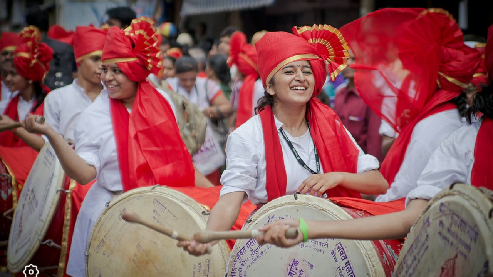
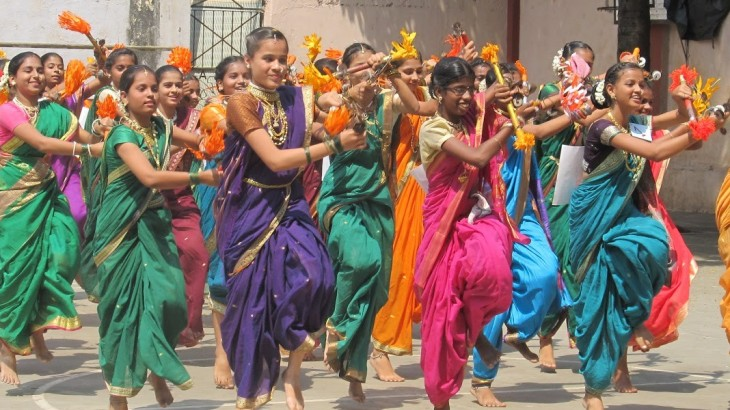
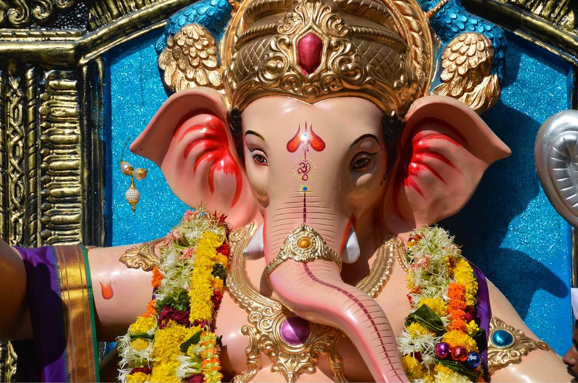
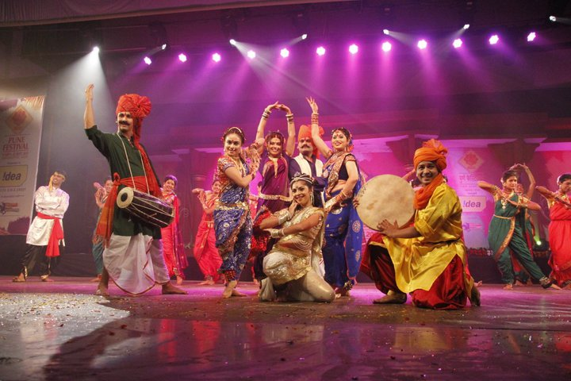
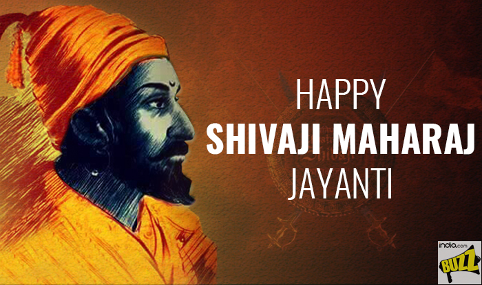
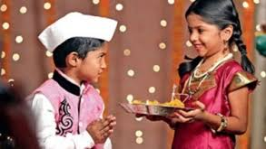

Culture of Pune
Though the culture of Pune is very cosmopolitan, it is considered as the cultural capital of Maharashtra. It is a place where traditional and modern cultures coexist. An apt representation of the traditional culture would be the Ganapati Festival, a 10-day festival where decorative lights and festive music make the entire city come to life. Other festivals such as Eid, Christmas and New Year are also celebrated with joy and enthusiasm. The city is a bastion of arts, music, dance and theatre. Sawai Gandharva Music Festival is one of the most popular Indian classical music festivals in the world. Shaniwarwada Dance Festival is another such festival, attracting prominent classical dancers. Several theatres in the city serve as a platform for budding artists. Pune has numerous options for foodies, from Marathi street food and snacks to South Indian, Punjabi and international cuisines.
Dhol Tasha
As the city celebrates one of its favourite and most-awaited festivals, Ganeshotsav, one cannot undermine the energy that dhol tasha pathaks bring into the celebrations. Pune boasts of 170 dhol tasha pathaks with more than 22,000 participants between the age group seven and 85.
“Dhol tasha is said to have been an integral part of Maharashtra from the medieval period. The dhol (double-headed drum)?was also used to encourage the troupes during wars,” says Parag Thakur, president of Dhol tasha mahasangh Maharashtra. The dhol is often known as a mangal vadya (celebratory instrument) as well as ran vadya (instrument for encouragement during a battle), he adds.
Lezim
 Lezim dancers carry a small musical instrument with jingling cymbals called the Lezim, after which the dance form is named.This dance is named after a wooden idiophone to which thin metal discs are fitted which produce a jingling sound and the dancers use this while dancing. Dholki, a drum instrument is used as the main percussion music. It is performed dressed in colourful costumes.[2] The dance is frequently used as a fitness drill by schools in Maharashtra, militias and other institutions because it involves many calisthenic moves and can be quite strenuous.
Lezim is more of a vigorous physical exercise and drill than a dance; the formations can be in two's, fours and even in a circle. Historically, there were a few variations of the lezim practiced in the villages of Maharashtra and parts of Gujarat, however these are seldom used today. One variation used a 2.5 feet long bamboo pole (Reedh) with an iron chain (Dhanusyasarakhi). This was used more as a form of exercise than dance, as the lezim was heavy. Such lezims were invariably hand made.
Another variation of the lezim (called Koyande) used a wooden pole, 15 to 18 inches long, with both ends punctured and an iron linked chain weighing about 1 kg running through it scale iron chain link chain. They also contained a 6 inches long hand chain (salaisakhali), through which the four fingers fit snugly.
Festivals of Pune
All the Indian festivals like Diwali, Janmashtami, Navaratri, Dashahara, Holi, Rakshabandhan, Christmas, Id etc are celebrated with the same excitement in Pune with no religion, language bars. But Pune is famous for its Ganesh festival.
Ganeshmahotsav
This is the most important and biggest festival in Pune. It falls on the 4th day of the bright fortnight of Bhadrapada (August - September). People buy Ganesh images to keep in their houses as a divine guest for five to ten days. The image is then taken out ceremoniously and immersed to the river, sea or well. It is called Visarjan. Keeping the idol after this day is considered inauspicious.
Puja can be simply performed with family members within the household or by a priest. Modak is special cuisine for Ganesh Chaturthi celebrations. Aarti is performed morning and evening (dusk, or at the hour when artificial lamps are lighted in the house) a long as the Ganesh idol is at home.
Pune Festival
Pune festival is held between August and September during Ganesh Mahotsav. It is the biggest festival of Pune. The festival goes for ten days - starts with the installation of idols of Lord Ganesha on the first day to immersion of the Lord's idols on the tenth day. Pune festival mainly emphasises on the celebration of art and culture, song and dance, custom and tradition. It started as a local event but now has succeeded to attract visitors from across India and abroad. The Maharashtra Tourism Development Corporation joining hand with the Union government actively promotes the festival abroad as a major tourist attraction.
Shivaji Maharaj Jayanti
Celebrated as the birthday of Chhatrapati Shivaji Maharaj in Maharashtra on 19th February, Shivaji Maharaj Jayanti happens to be a festival that is rejoiced with magnificence. Shivaji was born to Jijabai and Shahaji Bhonsle, on 19th February, 1627. He was named Shivaji after local Goddess Shivai. Being the creator of Marathas, he was influential in bringing together various Maratha chiefs of Mayal, Konkan and Desh regions. This hero was not only successful in bringing the people of Pune city together but united India as a nation too. Therefore, Shivaji Jayanti is celebrated on a royal note in Pune with several processions being taken out where people dress themselves up as Shivaji and his associates, various colourful events are organised to remember the achievements of this great Maratha ruler.
Bhaubeej
Bhaubeej is also known as Bhai Dooj in other parts of India. This festival in Pune and all over Maharashtra is celebrated, beginning with sisters drawing special square shape on the floor and making the brother sit inside it. He is then made to consume a bitter fruit called Karith. This custom comes from a mythological tale that Lord Krishna tasted this fruit before he went on for his mission to slay demon Narakasura. On Bhaubeej, sisters pray for their brother's long and prosperous life while performing tika ceremony. Brothers also bless their sisters and present them with Bhaubeej gifts. And after the rituals are completed, everyone gorges upon delicious Basundi Poori or Shrikhand Poori.